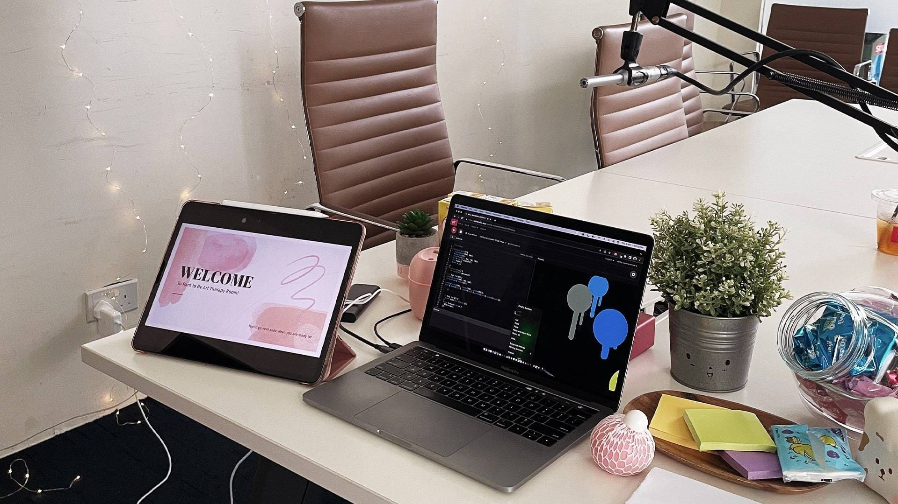
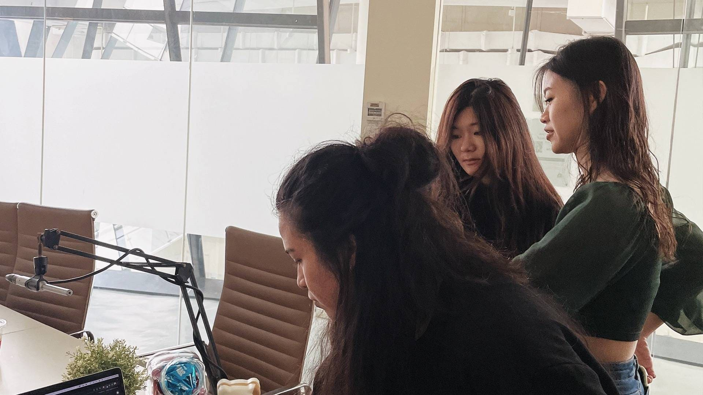
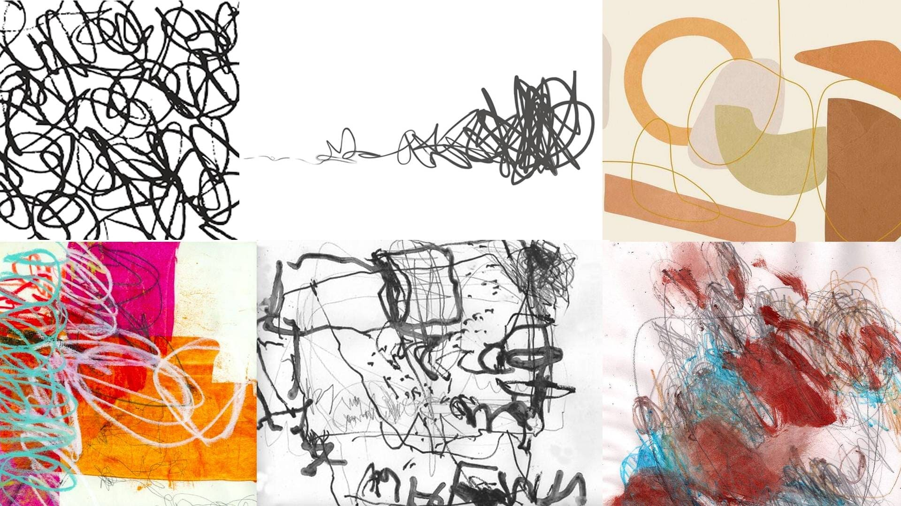

Process
During the Singapore Art Book Fair of 2022, there was a booth called ‘variegated’ in which they created a generative design output using a thermal printer and coding. As a group, we thought that this was innovative and invites the viewer to not only view but to interact with the design, resulting in receiving a randomise (generative designed) outcome. With that, we came up with the concept of generating a randomised outcome that is unique to each upon interaction.
We started with a moodboard to determine the type of outcome we wanted to generate and proceeded to try our best to design codes using sound and amplitude. During our proposal presentation, Andreas commented that it would be simpler to play with shapes instead of scribble lines which we heed and went ahead with.
Using provided coding software that was taught to us in year 1 by Andreas, p5js is the main tool that will be used to generate the programmed visual platform that the viewers will interact with. Two students in our group (Nicole & Kelsey) have an experience with p5js, thus they will be finding codes that can help in producing a final product. In addition to this, Nicole and Kelsey have produced a voice interactive visual representation of a given quote, which they are utilizing as a part of the experimental process - breaking down the code and adding new codes to come up with a newfound outcome. Eliza's role is to provide other codes that are already made which allows us to experiment with them. Together as a team, we decided to go with a cosy room set-up that will allow people to feel comfortable and relaxed and ready to open up. To further aid them in the process or ranting, we created a powerpoint slides that poses personal questions for them to speak on.

- 
- 


- 
SOME NOTES FOR RANT TO ME ROOM:
1. Option to stay longer than 5 mins.
2. Water, snacks & cosy pillows included.
3. Option to bring your own items to get cozied up.
4. To state that no audio will be recorded
5. Option to bring a friend along.
Our booth was held in the afternoon on a Tuesday and Thursday. Before the launch of our booth, we made a list of items to prepare for the room prior the start of our session such as fairy lights, stress balls, plants, humidifier with essential oil, snacks, drinks and cushions to make the place cosier and more comfortable for our participants to relax. To us, it was important that they are relax so they can enjoy and have a fulfilling experience of our booth.
Below is a non-audio video recording taken on our go-pro to document the process of our participants during the Rant to Me session!